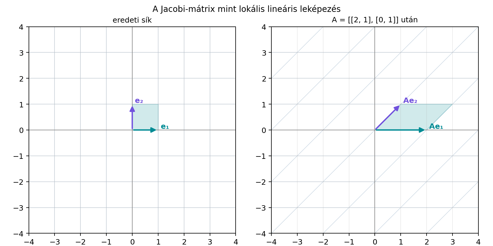

23.3 Jacobi-mátrix, Hesse-mátrix és
többváltozós Taylor-formula
23.3.1 Miért van szükség
mátrixokra?
Egyváltozós analízisben a derivált egy szám: megadja az érintő
meredekségét. Többváltozós esetben a lineáris közelítés már nem egy
szám, hanem egy mátrix: egyszerre tartalmazza az összes
parciális deriváltat, és azt is megmondja, hogyan keverednek a bemeneti
változók. Két tipikus kérdés, amelyre ez a mátrix válaszol:
Egy két csuklóból álló robotkar végpontjának sebessége hogyan függ
az ízületi sebességektől? A kapcsolat lineáris, és az együtthatómátrix
éppen a Jacobi-mátrix.
Amikor polárkoordinátákra térünk át, miért jelenik meg a
területelemben az
szorzó? A válasz a Jacobi-determináns, amely lokálisan megadja a
területtorzítást.
Ebben az alfejezetben először a vektorértékű függvények
Jacobi-mátrixát, majd a láncszabály mátrixalakját vezetjük be. Ezután a
skalárértékű függvények Hesse-mátrixát és a másodrendű többváltozós
Taylor-formulát tárgyaljuk.
23.3.2 Szemléletes kép
Az alábbi ábra egy
-es
mátrix, mint lineáris leképezés hatását mutatja az egységnégyzetre. A
leképezés által a négyzet paralelogrammába megy át, és a területének
változása a determináns abszolút értékével egyezik meg.

A Jacobi-mátrix mint lokális lineáris
leképezés - A ((2,1),(0,1)) mátrix az egységnégyzetet paralelogrammába
viszi; a terület a determináns abszolút értéke, azaz 2. A
Jacobi-determináns lokálisan ugyanezt a torzítást méri.
Leírás: az egységnégyzet csúcsai
,
,
,
.
A mátrixszal szorozva ezek rendre
,
,
,
képbe kerülnek. A kapott paralelogramma területe
,
ami a mátrix determinánsának abszolút értéke.
23.3.3 A Jacobi-mátrix
definíciója
Legyen
,
ahol
,
és
.
Tegyük fel, hogy az
komponensfüggvények parciális deriváltjai léteznek az
pontban.
Definíció. A
függvény Jacobi-mátrixa (Jacobian matrix) az
pontban az az
-es
mátrix, amelynek
-edik
sorában a
komponens parciális deriváltjai állnak:
Gyakran használjuk a
jelölést is. Ha
totálisan differenciálható
-ban,
akkor a totális derivált éppen a
mátrixszal való szorzás, és a lineáris közelítés így írható:
Ha
,
akkor a Jacobi-mátrix négyzetes, és beszélhetünk a
Jacobi-determinánsról:
A mátrix mérete jól mutatja, hogy a bemeneti tér kétdimenziós, a
kimeneti tér háromdimenziós.
23.3.5 A láncszabály
mátrixalakja
A láncszabály mátrixalakja az egyváltozós eset természetes
általánosítása: ha két függvényt egymás után alkalmazunk, a
deriváltmátrixok szorzódnak.
Tétel. Legyen
totálisan differenciálható az
pontban, és legyen
totálisan differenciálható a
pontban. Ekkor az
kompozíció totálisan differenciálható
-ban,
és
Bizonyítás. Elég komponensenként ellenőrizni. A
kompozíció
-edik
komponense
,
ahol
skalárértékű. A többváltozós láncszabály szerint
A jobb oldal éppen a
mátrix
-edik
sorának és a
mátrix
-edik
oszlopának skaláris szorzata. Ez viszont a mátrixszorzás definíciója,
tehát a két oldal egyenlő. ∎
Figyelem. A sorrend fontos: először a külső
függvény, utána a belső függvény mátrixa következik. A mátrixméreteknek
illeszkedniük kell: ha
és
,
akkor
mérete
,
mérete
,
a szorzat
.
23.3.6 A Jacobi-determináns és a
lokális területtorzítás
Tegyük fel, hogy
totálisan differenciálható az
pontban. A lineáris közelítés szerint egy kis
elmozdulást a
mátrixszal szorozzuk. Ha
egy kis
-dimenziós
hasáb (például síkban téglalap) oldalvektorait jelenti, akkor a kép
oldalvektorai
,
és a képtérfogat (terület) az eredeti térfogat
-szorosa.
Ezért a Jacobi-determináns abszolút értéke a lokális térfogat-
vagy területtorzítási tényező.
Szemléletes kép. A fenti transform
ábrán a mátrix determinánsa
,
ezért a terület a kétszeresére nő. A Jacobi-determináns lokálisan
ugyanezt fejezi ki: egy pont környezetében a leképezés közel lineáris,
és a területek skálázódása
.
Példa: polárkoordináták. Legyen
A
leképezés Jacobi-mátrixa:
így a Jacobi-determináns
Mivel a polárkoordinátákban
,
az abszolút érték elhagyható. Ezért a területelem:
Adjunk meg a Hesse-mátrixot, és írjuk fel a másodrendű
Taylor-polinomot az
pont körül.
Megoldás. Először a gradienst számoljuk ki:
A Hesse-mátrix:
ami valóban szimmetrikus, mert
.
Az
pontban:
Legyen
az elmozdulás. A másodrendű Taylor-formula (amelyet rövidesen kimondunk
és levezetünk) szerint:
Behelyettesítve:
Ellenőrzésképpen fejtsük ki az eredeti függvényt
,
esetén:
A Taylor-polinom éppen a legfeljebb másodfokú tagokat tartalmazza, a
maradék
,
tehát a közelítés helyes.
23.3.9 A többváltozós
Taylor-formula
Az egyváltozós Taylor-formulát a A Taylor-formula
maradéktaggal alfejezetben tanultuk. Többváltozóban a másodrendű
közelítés a következő.
Tétel (másodrendű Taylor-formula). Legyen
kétszer folytonosan differenciálható az
pont egy környezetében. Ekkor
Bizonyítás. Definiáljuk a
egyváltozós függvényt, ahol
rögzített
mellett. A láncszabály szerint
és
A Newton–Leibniz-tételt kétszer alkalmazva:
A Hesse-mátrix folytonossága miatt
esetén
egyenletesen
-re,
ezért
Ezzel a tétel következik. ∎
Megjegyzés. A formula jól mutatja az egyváltozós
eset szerkezetét: az elsőrendű tag a gradiens, a másodrendű tag a
Hesse-mátrix segítségével írható fel. A maradék
azt jelenti, hogy a másodfokú közelítés hibatagja a négyzetesnél
gyorsabban tart nullához.
23.3.10 Kvadratikus alakok és a
2×2-es mátrix definitsége
A Taylor-formula másodrendű tagja
alakú. Az ilyen kifejezést kvadratikus alaknak (quadratic
form) nevezzük. A szélsőérték-vizsgálathoz tudnunk kell, hogy
ez a kvadratikus alak milyen előjelű.
Definíció. A
kvadratikus alak, ahol
szimmetrikus
-es
mátrix,
pozitív definit, ha
minden
esetén;
negatív definit, ha
minden
esetén;
indefinit, ha felvesz pozitív és negatív értéket
is;
pozitív szemidefinit, ha
minden
-ra,
és hasonlóan negatív szemidefinit.
-es
esetben a definitség egyszerűen eldönthető.
Tétel. Legyen
szimmetrikus mátrix, és legyen
.
Ha
és
,
akkor
pozitív definit.
Ha
és
,
akkor
negatív definit.
Ha
,
akkor
indefinit.
Ha
,
akkor
pozitív szemidefinit (ha
)
vagy negatív szemidefinit (ha
),
de nem definit; a szélsőérték-vizsgálatban ilyenkor további vizsgálat
kell.
Bizonyítás. A kvadratikus alak
Ha
,
teljes négyzetté alakítunk:
Ha
és
,
mindkét tag nemnegatív, és ha
,
a második tag pozitív; ha pedig
,
de
,
az első tag pozitív. Tehát pozitív definit.
Ha
és
,
ugyanez negatív előjelekkel adódik.
Ha
és
,
akkor a második tag együtthatója negatív. Választhatunk
-t
és
-t,
így
;
ugyanakkor
,
esetén
.
Tehát
indefinit.
Ha
és
,
akkor
,
esetén
;
,
esetén
.
Tehát
indefinit.
Az
,
de
eset hasonlóan kezelhető, a szerepek felcserélésével. Ha
,
akkor
,
ami
esetén indefinit,
esetén a nullaforma.
Ezzel a tételt igazoltuk. ∎
Példa. Az előző Hesse-mátrix
esetében
és
,
tehát a Hesse-mátrix pozitív definit. Ez összhangban van azzal, hogy a
közelítő kvadratikus alak pozitív.
23.3.11 Számolási recept
A következő lépésekben foglaljuk össze a Jacobi- és Hesse-mátrixok,
valamint a Taylor-polinom kiszámítását.
Tisztázd a függvény típusát: hány bemeneti és hány
kimeneti változó van? Ha
,
Jacobi-mátrixot számolunk; ha
,
a Jacobi-mátrix egysoros (a gradiens sorvektora), és a második
deriváltak mátrixa a Hesse-mátrix.
Számítsd ki a parciális deriváltakat: minden
komponensre és minden változóra. A Jacobi-mátrix
-edik
sorába az
komponens parciális deriváltjai kerülnek.
Ha láncszabályt használsz: írd fel a belső és a
külső függvény Jacobi-mátrixát, majd számítsd ki a
mátrixszorzatot. Ellenőrizd a méreteket.
Ha területtorzítást vizsgálsz: számítsd ki
-t,
és vedd az abszolút értékét.
Ha másodrendű Taylor-polinomot írsz fel: számítsd
ki a gradiens és a Hesse-mátrix értékét a kívánt pontban, majd
helyettesíts a
képletbe.
Ellenőrizz: fejtsd ki az eredeti függvényt a pont
körül, és hasonlítsd össze a másodfokú tagokig.
23.3.12 Valós életbeli alkalmazás:
síkbeli robotkar Jacobi-mátrixa
Tekintsünk egy egyszerű, két szegmensből álló síkbeli robotkart. A
két kar hossza legyen
és
,
a csuklószögek
és
.
A végpont derékszögű koordinátái:
Ez a
leképezés egy
függvény. A Jacobi-mátrixa:
A mátrix szorzatként adja meg a csuklósebességek és a végpont
sebességének kapcsolatát (a vessző az idő szerinti deriváltat jelöli:
,
):
Számpélda. Legyen
m,
m,
radián,
radián. Ekkor
,
;
,
.
A Jacobi-mátrix:
A Jacobi-determináns:
Ez azt jelenti, hogy a konfiguráció nem szinguláris: a
csuklósebességekből a végpontsebesség egyértelműen meghatározott, és
fordítva, adott végpontsebességhez egyértelmű csuklósebesség
tartozik.
Az alábbi ábra a számpélda konfigurációját mutatja: a
első oszlopa a végpont sebessége, ha csak az első csukló forog egységnyi
szögsebességgel, a második oszlop pedig ugyanez a második csuklóra; a
végpont sebessége e két vektor
-
és
-szörösének
összege.
Statikus változat (mint a PDF-ben)
A robotkar Jacobi-mátrixának oszlopai és a végpont sebessége
(,
,
rad/s,
rad/s)
Legyen például
rad/s és
rad/s. Ekkor a végpont sebessége:
A sebesség nagysága
m/s, ami reális egy ilyen kar esetén.
A modell korlátai. Ha a kar teljesen kinyújtott
állapotban van
(),
akkor a második oszlop párhuzamos az elsővel, és
.
Ez szinguláris konfiguráció: a robot ilyenkor nem tud
minden irányba szabadon mozogni, illetve a végpontsebesség inverz
kiszámítása végtelenül érzékeny a mérési hibákra. A valós
robotirányításban ezért kerülik a
helyzeteket.
23.3.13 Tipikus hibák
A Jacobi-mátrixot összetévesztik a gradienssel.
A gradiens csak skalárértékű függvény esetén értelmezett; a
Jacobi-mátrix általánosabb, és vektorértékű függvényre
-es
mátrix. A gradiens a Jacobi-mátrix speciális esete, amikor
.
A láncszabálynál a mátrixszorzat sorrendjét
elrontják. A helyes sorrend
,
nem pedig
.
Ellenőrzésül nézd meg a mátrixméreteket: csak az illeszkedő méretek
szorozhatók össze.
A Jacobi-determinánsnál elfelejtik az abszolút
értéket. A területtorzítás mindig nemnegatív, ezért a
területelemben
szerepel. Polárkoordinátáknál
,
ezért ott nincs gond, de általános változócsere esetén fontos.
A Taylor-formulában a másodrendű tagot helytelenül írják
fel. A másodrendű tag nem egyszerűen
,
hanem
.
A
szorzó gyakran lemarad.
A Hesse-mátrixot nem szimmetrikusként kezelik.
Ha a vegyes parciális deriváltak folytonosak, a Hesse-mátrix
szimmetrikus a Young-tétel miatt; ezért a kvadratikus alakban a vegyes
tag együtthatója
.
23.3.14 Önellenőrzés
Igaz-e, hogy minden Jacobi-mátrix négyzetes? Indokold.
Számítsd ki a
függvény Jacobi-mátrixát az
pontban.
Igaz-e, hogy ha a Hesse-mátrix szimmetrikus, akkor a vegyes
parciális deriváltak egyenlők? Indokold röviden.
A
kvadratikus alak pozitív definit? Írd fel a hozzá tartozó szimmetrikus
mátrixot.
Mit fejez ki a polárkoordinátás leképezés Jacobi-determinánsa?
23.3.15 Feladatok
1. feladat (A). Legyen
,
.
Számítsd ki a Jacobi-mátrixot és a Jacobi-determinánst az
pontban.
2. feladat (A). Legyen
.
Add meg a Hesse-mátrixot, és írd fel a másodrendű Taylor-polinomot az
pont körül.
3. feladat (B). Legyen
és
.
Számítsd ki a
mátrixot kétféleképpen: közvetlenül a kompozícióból, és a láncszabály
mátrixalakjával. Ellenőrizd, hogy az eredmények megegyeznek.
4. feladat (B). Döntsd el a
mátrix definitségét, és írd fel a hozzá tartozó
kvadratikus alakot teljes négyzetek összegeként.
5. feladat (C). Bizonyítsd be, hogy ha
kétszer folytonosan differenciálható, akkor a
függvény második deriváltja
.
6. feladat (D). Egy két szegmensű síkbeli robotkarra
m, és a csuklószögek
,
.
A végpont sebességét szeretnénk
m/s és
m/s értékre beállítani. Oldd meg a szükséges
és
csuklósebességeket.
23.3.16 Megoldások
23.3.16.1 Önellenőrzés –
válaszok
Nem, a Jacobi-mátrix csak akkor négyzetes, ha a bemeneti és
kimeneti dimenzió megegyezik
().
Ha
,
a mátrix téglalap alakú.
A komponensek
,
,
ezért
így
.
Igen, de ez tautológia: a szimmetria éppen azt jelenti, hogy
.
A tartalmas állítás a fordított irány: a Young-tétel szerint folytonos
vegyes deriváltak esetén a Hesse-mátrix szimmetrikus; folytonosság
nélkül a szimmetria el is romolhat.
A szimmetrikus mátrix
mert a
vegyes tagot
-ként
kell felírni. Determináns
,
tehát a mátrix indefinit, így a kvadratikus alak nem pozitív
definit.
A polárkoordinátás leképezés Jacobi-determinánsa
,
tehát a lokális területtorzítás mértéke a sugárral arányos:
.
23.3.16.2 Feladatok megoldásai
1. feladat. A Jacobi-mátrix:
A Jacobi-determináns:
Ellenőrzésképpen: ha
,
akkor
,
,
a képlet
.
∎
2. feladat. A gradiens:
a Hesse-mátrix:
Az
pontban
,
.
Legyen
.
A Taylor-polinom:
Ellenőrzés: az eredeti függvény
,
esetén
,
és magasabb fokú tag nincs is, tehát a Taylor-polinom pontosan a
függvény. ∎
3. feladat. A láncszabállyal:
,
és
A
pontban:
így
Közvetlenül:
,
így
,
ami megegyezik. ∎
4. feladat. Az
mátrixhoz tartozó kvadratikus alak:
Teljes négyzetté alakítás:
Mivel mindkét együttható pozitív, a mátrix pozitív definit. Ugyanerre
jutunk a kritériumból is:
,
.
∎
5. feladat. A
függvényt a láncszabály szerint deriválva:
Deriváljunk még egyszer a szorzat- és láncszabály segítségével:
Mivel a Hesse-mátrix elemei
,
a fenti kettős összeg éppen a
kifejezés, tehát
.
∎
6. feladat. Az alkalmazásban már kiszámolt
Jacobi-mátrix:
A megoldandó lineáris rendszer:
A második egyenletből
,
ezért
rad/s. Az első egyenletbe helyettesítve:
Ellenőrzés: a kapott csuklósebességekkel a végpont sebességvektora
m/s, ahogy előírtuk. A második csukló negatív irányba forog, ami a
robotkar geometriájából reálisan adódik. ∎
23.3.17 Rövid összefoglaló
Legyen
differenciálható. A Jacobi-mátrix
az
-es
mátrix, amelynek elemei
.
A láncszabály mátrixalakja:
Ha
,
a Jacobi-determináns
a lokális területtorzítás mértéke; például polárkoordinátáknál
,
ezért
.
Skalárértékű
esetén a Hesse-mátrix a másodrendű parciális deriváltak szimmetrikus
mátrixa, ha a vegyes deriváltak folytonosak. A másodrendű
Taylor-formula: